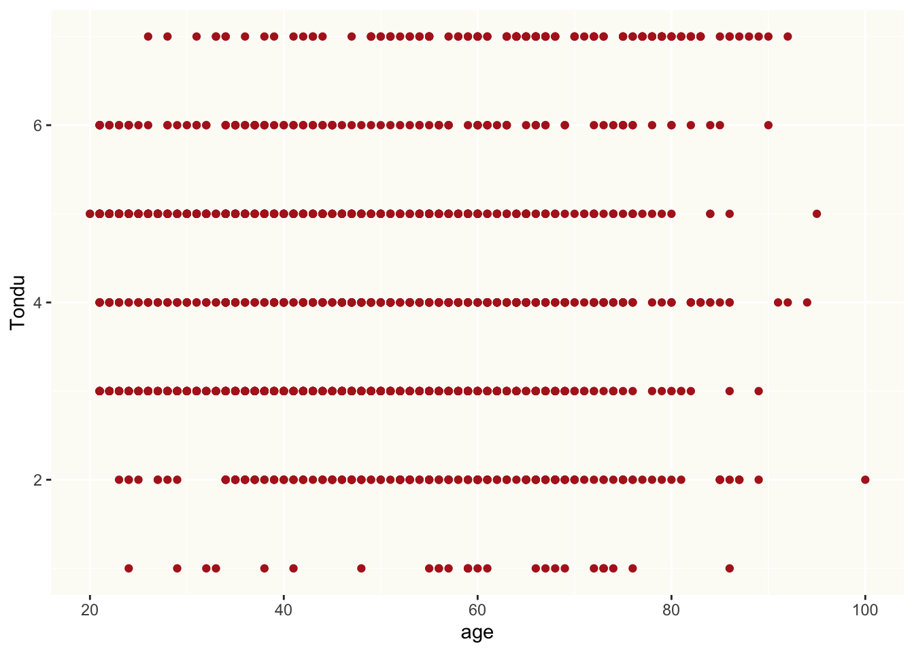
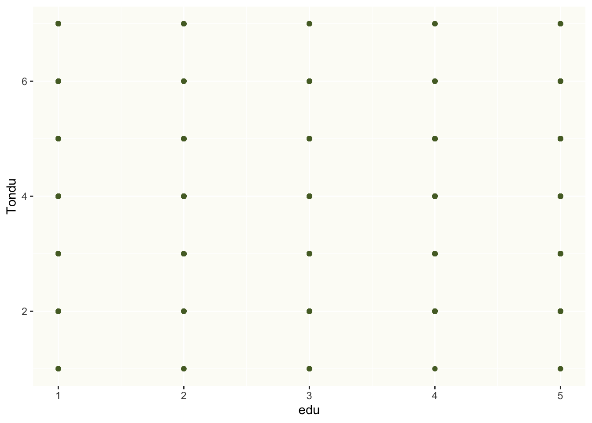
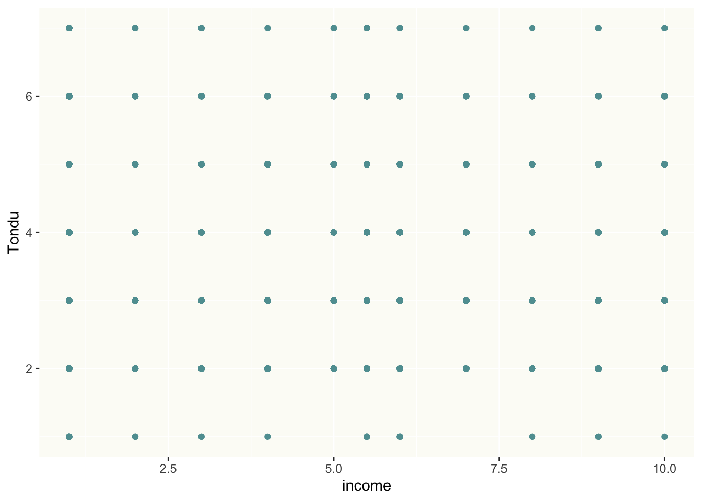
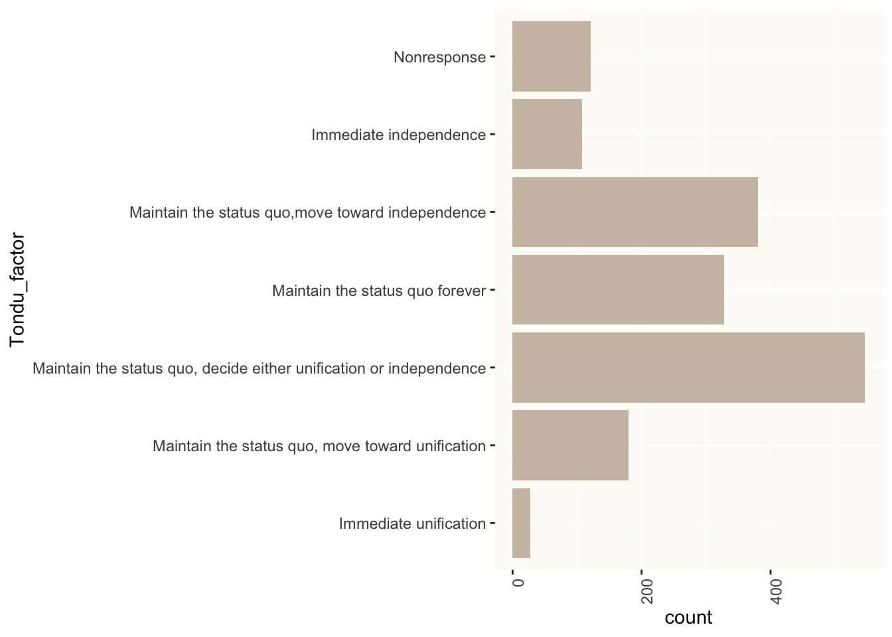
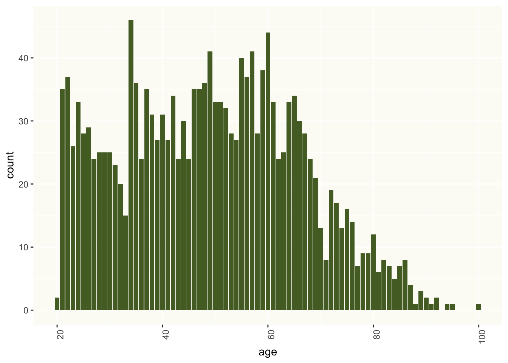
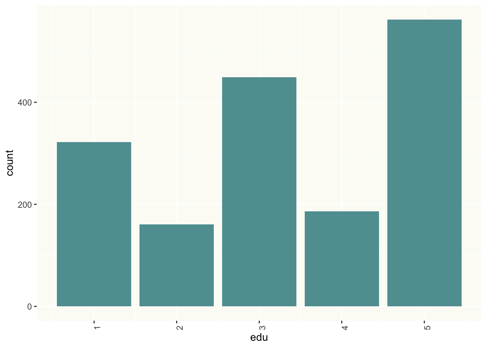
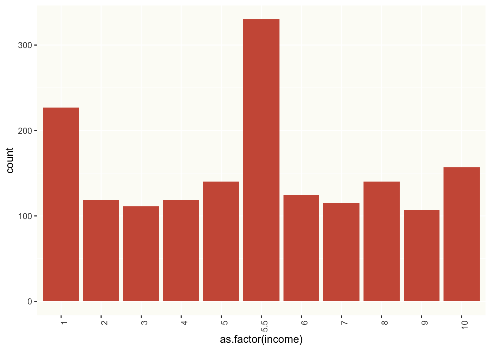

library(haven)
library(expss)
library(ggplot2)
library(plyr)
# loading data
TEDS_2016 <- read_stata("https://github.com/datageneration/home/blob/master/DataProgramming/data/TEDS_2016.dta?raw=true")Data Analysis
Step 1 - is to load the data
Step 2 - is making a subset of the data and understanding the variables
# creating a subset
Sub_TED <- subset(TEDS_2016, select = c("Tondu", "female", "DPP", "age", "income", "edu", "Taiwanese", "Econ_worse"))
# viewing class of main dependent variable "Tondu"
class(Sub_TED$Tondu)[1] "haven_labelled" "vctrs_vctr" "double" # We need this variable to be a factor in order to understand the categories of the variable
Sub_TED$Tondu <- haven::as_factor(Sub_TED$Tondu)
# viewing class and levels of "Tondu" again
class(Sub_TED$Tondu)[1] "factor"levels(Sub_TED$Tondu)[1] "Immediate unification"
[2] "Maintain the status quo,move toward unification"
[3] "Maintain the status quo, decide either unification or independence"
[4] "Maintain the status quo forever"
[5] "Maintain the status quo,move toward independence"
[6] "Immediate independence"
[7] "Nonresponse" | Level | Description |
|---|---|
| 1 | Immediate unification |
| 2 | Maintain the status quo, move toward unification |
| 3 | Maintain the status quo, decide either unification or independence |
| 4 | Maintain the status quo forever |
| 5 | Maintain the status quo,move toward independence |
| 6 | Immediate independence |
| 7 | Nonresponse |
We could convert “Tondu” to a numeric variable using the code below. However, it would be difficult to interpret the results. A more meaningful analysis would be to use Multinomial Logistic regression which transforms the dependent variable and then uses Maximum Likelihood Estimation, rather than least squares, to estimate the parameters.
Sub_TED$Tondu<-as.numeric(Sub_TED$Tondu,labels=c("Unification now”, “Status quo, unif. in future”, “Status quo, decide later", "Status quo forever", "Status quo, indep. in future", "Independence now”, “No response"))
class(Sub_TED$Tondu)[1] "numeric"# to see class of all variables in data frame
sapply(Sub_TED, class) Tondu female DPP age income edu Taiwanese
"numeric" "numeric" "numeric" "numeric" "numeric" "numeric" "numeric"
Econ_worse
"numeric" Since all the variables are numeric we can start with a scatterplot
sp1 <- ggplot(Sub_TED, aes(x=age, y=Tondu)) +
geom_point(color = "firebrick") +
theme(panel.background = element_rect(fill = "#FCFCF6"))
sp2 <- ggplot(Sub_TED, aes(x=edu, y=Tondu)) +
geom_point(color = "darkolivegreen") +
theme(panel.background = element_rect(fill = "#FCFCF6"))
sp3 <- ggplot(Sub_TED, aes(x=income, y=Tondu)) +
geom_point(color = "cadetblue") +
theme(panel.background = element_rect(fill = "#FCFCF6"))
sp1
sp2
sp3
The problem with these scatter plots is that even though the dependent variables is coded as numeric it has discrete values and is in fact a categorical variable. A better way to represent the data would be to code the variables properly.
# trying to fit a regression line to the plot
sp1 + geom_smooth(method = "lm",
formula = Tondu ~ age)Warning: Computation failed in `stat_smooth()`
Caused by error:
! object 'Tondu' not foundSub_TED$Tondu <- haven::as_factor(Sub_TED$Tondu)
class(Sub_TED$Tondu)[1] "factor"levels(Sub_TED$Tondu)[1] "1" "2" "3" "4" "5" "6" "7"
Note
When we convert back from numeric to factor we lose the information of the levels. We have to code it back to the variable using the code below.
Sub_TED$Tondu_factor <- revalue(as.factor(Sub_TED$Tondu), c(
"1" = "Immediate unification",
"2" = "Maintain the status quo, move toward unification",
"3" = "Maintain the status quo, decide either unification or independence",
"4" = "Maintain the status quo forever",
"5" = "Maintain the status quo,move toward independence",
"6" = "Immediate independence",
"7" = "Nonresponse"))
levels(Sub_TED$Tondu_factor)[1] "Immediate unification"
[2] "Maintain the status quo, move toward unification"
[3] "Maintain the status quo, decide either unification or independence"
[4] "Maintain the status quo forever"
[5] "Maintain the status quo,move toward independence"
[6] "Immediate independence"
[7] "Nonresponse" Now we can use a bar plot to visualize the data.
bar_Tondu <- ggplot(Sub_TED, aes(x=Tondu_factor )) +
geom_bar(fill="antiquewhite3") +
theme(axis.text.x = element_text(angle = 90, vjust = 1, hjust = 1),
panel.background = element_rect(fill = "#FCFCF6")) +
coord_flip()
bar_age <- ggplot(Sub_TED, aes(x=age )) +
geom_bar(fill="darkolivegreen") +
theme(axis.text.x = element_text(angle = 90, vjust = 1, hjust = 1),
panel.background = element_rect(fill = "#FCFCF6"))
bar_edu <- ggplot(Sub_TED, aes(x=edu )) +
geom_bar(fill="cadetblue") +
theme(axis.text.x = element_text(angle = 90, vjust = 1, hjust = 1),
panel.background = element_rect(fill = "#FCFCF6"))
bar_income <- ggplot(Sub_TED, aes(x=as.factor(income) )) +
geom_bar(fill="coral3") +
theme(axis.text.x = element_text(angle = 90, vjust = 1, hjust = 1),
panel.background = element_rect(fill = "#FCFCF6"))
bar_Tondu
bar_age
bar_eduWarning: Removed 10 rows containing non-finite values (`stat_count()`).
bar_income